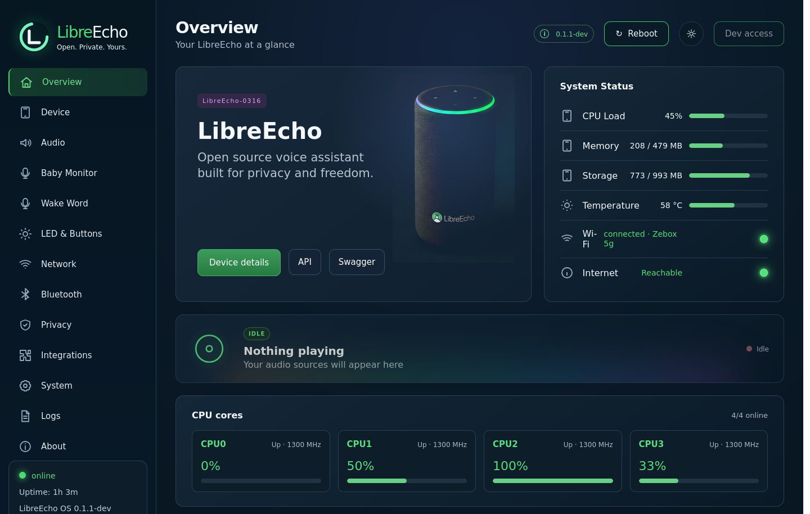
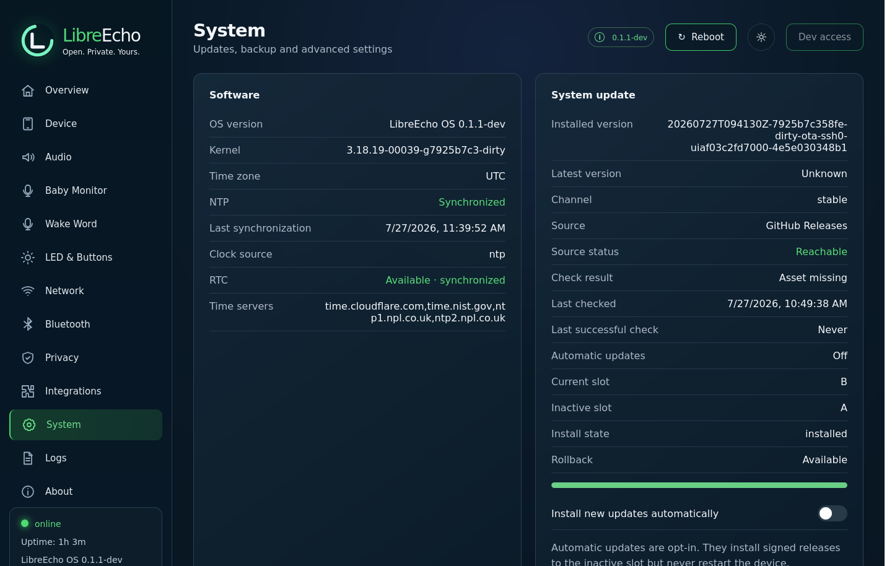

Validated baseline
Boot and recovery
The Linux 6.1 development line has a repeatable boot, recovery, and rollback path.
Community hardware liberation project
The Echo Gen 2 shipped in 2017 and was frozen on a 2015-era kernel. LibreEcho moves it onto a modern Linux 6.1 LTS-based platform, with an open operating system, local-first voice and a control centre you can run on your own network.
Stock Linux 3.18 → LibreEcho Linux 6.1 · real hardware, under active validation

01 / Mission
Echo Gen 2 contains a capable processor, microphones, speakers, wireless connectivity and an expressive LED ring. LibreEcho aims to document the platform and replace the proprietary software stack with an open, maintainable alternative.
The objective is broader than a one-off hack: reproducible research, understandable tooling and a path that other devices can follow.
02 / In action
The browser demo above is simulated. This section is reserved for proof of life on a real Echo Gen 2: Linux 6.1 booting, AirPlay audio playing and the LED ring responding. Captures land here as validation passes.
No stock cloud services are involved in these captures: the control plane, audio path and web interface are local.
03 / Progress
The Linux 6.1 baseline boots on hardware and has passed independent image verification. Real-world hardware, service, and release validation continues; the site separates validated paths from integration work still in progress.
Validated baseline
The Linux 6.1 development line has a repeatable boot, recovery, and rollback path.
Modern LTS-based upgrade
The current development line replaces the stock Linux 3.18 kernel with a standalone, reproducible Linux 6.1-based kernel for MT8163.
Validation ongoing
Firmware loading and the bounded WMT development choreography are validated; association and service hardening remain active work.
Hardware validated
Linux 6.1 AirPlay playback uses the accepted duplicated-mono stereo PCM transport; announcement and LED service integration remains under active validation.
Status reflects active development and may move quickly. See the repository for test evidence and the latest branch notes.
Recent wins: the Linux 6.1 MT8163 kernel line is separated and reproducible; the development baseline has passed independent image checks; real AirPlay playback is hardware-validated with duplicated mono carried in stereo PCM; and the bounded Wi-Fi/WMT development choreography is validated. Follow-up fixes and service-integration work remain active.
04 / Current UI
These captures are rendered from the latest LibreEcho-UI source during the dev Pages build. The interactive browser demo remains available above.


05 / Architecture
The stock Echo is the starting point, not the ceiling. LibreEcho keeps the useful hardware while building local intelligence and open integrations. Linux 6.1 audio playback is hardware-validated; microphone, wake-word, assistant, and Home Assistant/Wyoming paths remain explicit integration targets rather than stable release claims.
06 / Roadmap
These are the ambitions guiding LibreEcho from the current validated baseline to a stable, useful local-first assistant.
Hardening
The bounded MT8163 wireless choreography is validated; association, recovery, and service integration still need continued hardening.
Validated baseline
Real AirPlay playback is hardware-validated with duplicated mono carried in two-channel stereo PCM; release integration and volume behavior remain under refinement.
Integration ongoing
Microphone, wake-word, STT, TTS, and assistant components exist in the development stack; end-to-end readiness is still being validated.
Integration ongoing
Wake-word integration is being exercised as part of the local voice pipeline, keeping detection configurable and independent of the stock cloud experience.
Planned
Make LibreEcho a first-class local voice interface for open home automation through Home Assistant. The Wyoming bridge is currently feature-branch work, not yet part of the Linux 6.1 image contract.
Roadmap order is directional, not a promise of delivery dates. Follow the repository for implementation updates.

07 / Get it & contribute
Kernel developers, embedded Linux engineers, reverse engineers, designers, testers and technical writers all have something valuable to contribute. And if you simply want a liberated Echo on your network, there is a path in too.
Want LibreEcho on your Echo?
The flashing path is currently developer-oriented: unlock, boot the validated baseline, then iterate from the control centre. A first-user install guide is being written against the Linux 6.1 baseline — watch the repository, or tell us you want it and it ships sooner.
Request the install guide
Keep the lights on.
Support funds the device lab, build infrastructure and the kernel time that keep validation moving on real hardware. Every contribution goes directly into LibreEcho's next milestone.
Support LibreEchoCommunity channel: currently in planning — for now the best place to talk is the GitHub repository issues, and watching it gets you notified when a dedicated space opens.